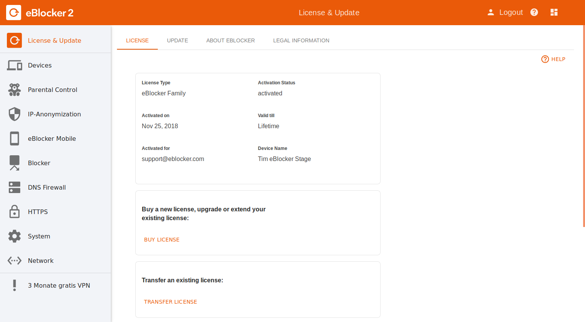

Note: This page has moved to https://eblocker.org/en/docs/what-is-the-difference-between-eblocker-base-eblocker-pro-and-eblocker-family
Deutsch | English
eBlocker Base
The eBlocker Base is our entry-level model. It includes the essential features that you need to be anonymous on the internet. It anonymizes your IP address via Tor or VPN and actively prevents your ISP from spying on your surfing behavior. It easily bypasses censorship and country-specific content locks. Using the eBlocker DNS Firewall feature, eBlocker distributes DNS requests to a list of different DNS servers or lets them resolve over the Tor network. The eBlocker Mobile feature gives you access to your eBlocker even outside your network.
eBlocker Pro

Adding to the eBlocker Base, the eBlocker Pro protects your privacy. It blocks all trackers and data collecting ads, anonymizes your IP-address and cloaks your device. In addition, the eBlocker Pro protects you from browser-based malware and phishing threats.
eBlocker Family

The eBlocker Family complements the features of the eBlocker Pro with Parental Control. Children and adolescents are protected from inappropriate web content. Parents can protect their kids from pornography, violence or gambling and allow safe surfing. Individual configurations per device and user can be enabled; surfing times can be defined and the duration of use limited.